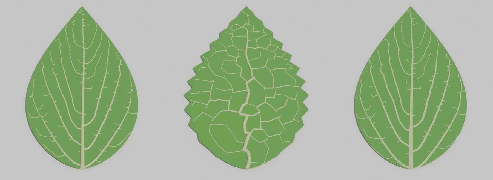
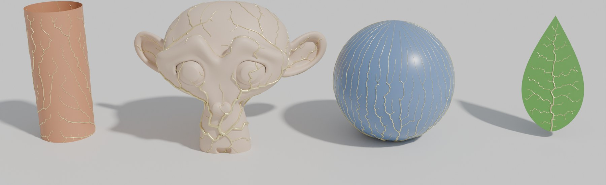
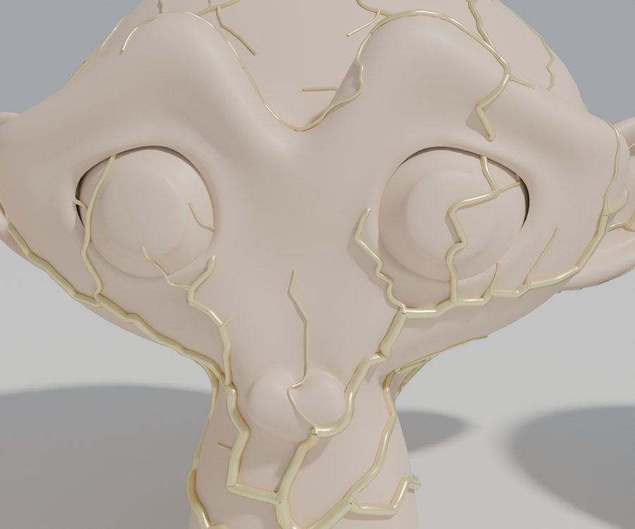
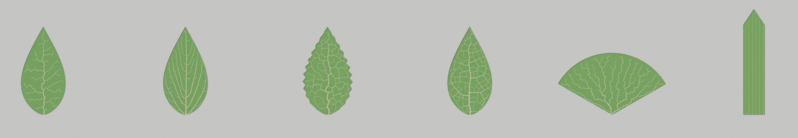
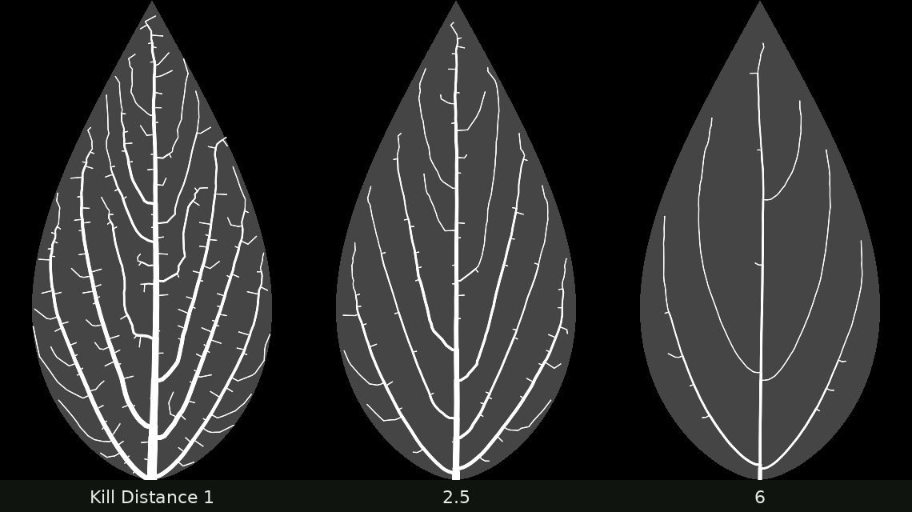
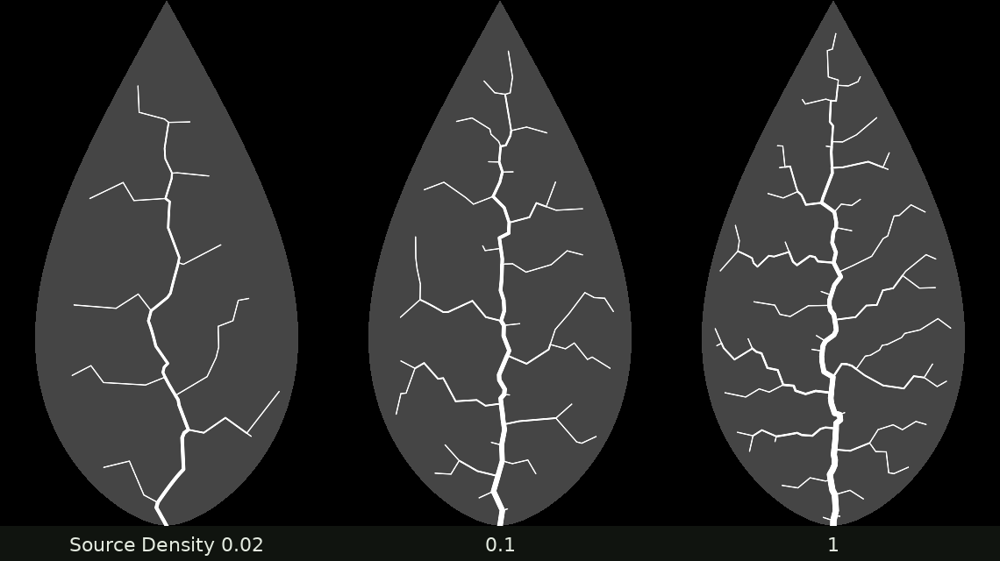
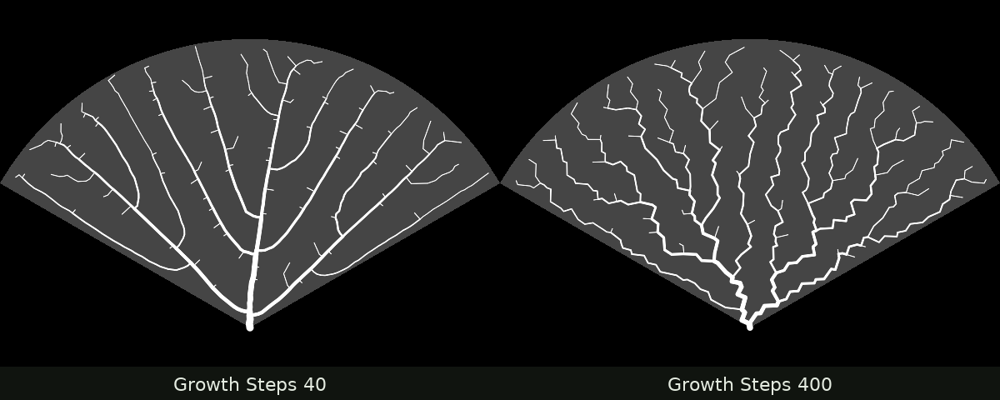
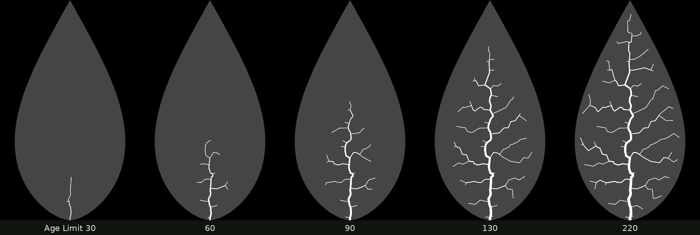
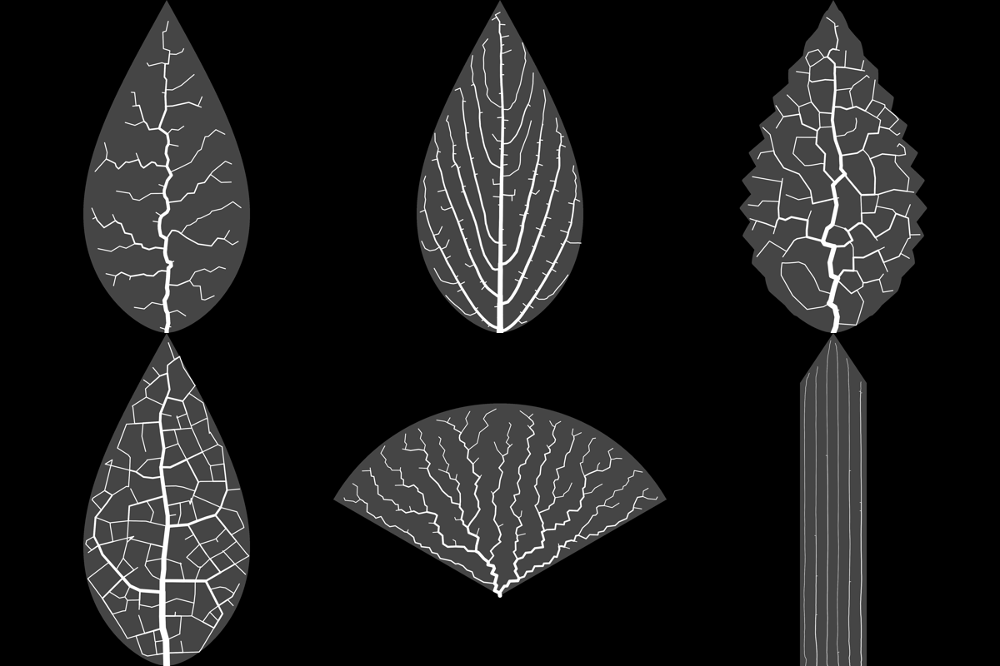
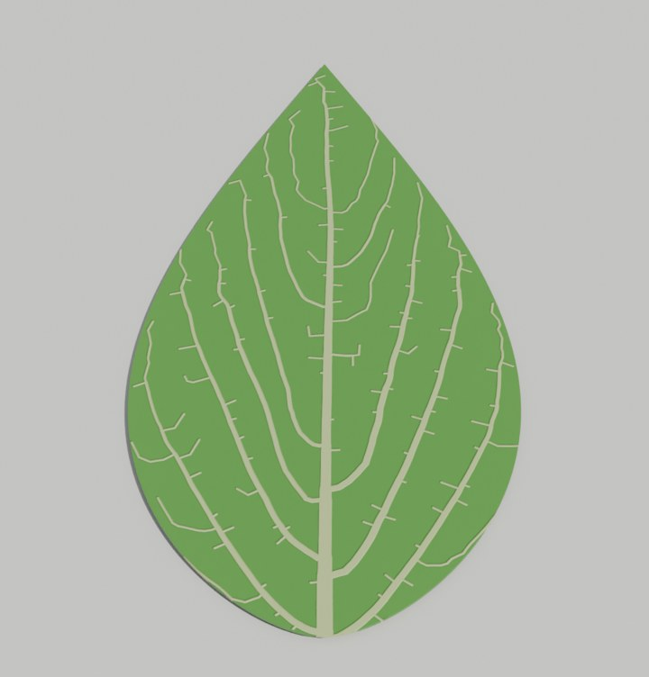

Overview
Veins grow the way they do in real leaves. Vein tips grow toward hormone sources scattered in the blade, and each source disappears once a vein reaches it. This follows Runions et al., SIGGRAPH 2005. The whole simulation runs inside a Geometry Nodes Repeat Zone. You can use it two ways: install the add-on, which adds leaves and grows veins over any mesh from a sidebar panel, or open the demo file, where everything ships as node groups.

| Node group | Put it on | What it does |
|---|---|---|
| Leaf Venation | A closed curve (the leaf outline) | Grows the veins and builds the tapered vein tubes and the leaf blade |
| Leaf Venation Skin | A vein mesh | Builds the tubes and blade only. The looped presets 3 and 4 use it. |
| Leaf Venation Surface | Any mesh object | Grows veins over the object's surface and adds them as tapered tubes |
| Leaf Venation Grow | (used inside the others) | The growth loop on its own. Its output is a vein mesh with age and root attributes. |
| Leaf Venation Skin Core | (used inside the others) | Murray's-law vein widths, tubes and blade |
Install the add-on
- Download
leaf_venation-1.0.0.zip. Don't unzip it. - In Blender 4.2 or newer, open Edit › Preferences › Get Extensions, click the small arrow at the top right and choose Install from Disk. Pick the zip. You can also drag the zip into the Blender window.
- In the 3D Viewport, press N and open the Leaf tab.
| Button | What it does |
|---|---|
| Add Leaf | Adds one of the six presets at the 3D cursor. Also in Add › Leaf (Venation). In the Adjust Last Operation panel, set the leaf's size, the random seed, or Looped Veins to grow closed loops with the Python simulator. |
| Add Veins to Selected | Grows veins over every selected mesh. See Veins on objects. |
| Start at 3D Cursor | Moves the start of the veins on the active object to the 3D cursor |
| Bake Vein Texture | Writes a PNG vein texture for a flat leaf and wires it into its blade material (Step 7) |
When the active object has veins, the panel also shows its most-used settings. Every setting is in the Modifier panel, like the steps below describe.
Veins on any object

- Click on the surface where the veins should start, which places the 3D cursor there (Shift+right-click).
- Select one or more mesh objects and click Add Veins to Selected.
- In the Adjust Last Operation panel, choose Start (3D Cursor or Lowest Point) and Detail. Higher detail gives finer veins and takes longer.
Distances are scaled to the object's size, so the first result is usually close. Then change it in the modifier:
| Input | What it changes |
|---|---|
| Start | Where the first vein starts, in object space. It snaps to the surface. |
| Mask | Name of a vertex group. Veins only grow where its weight is above 0.5. Paint the group in Weight Paint mode. |
| Growth | 0 places every source at once. 1 lets the vein field spread out from Start, which gives long main veins. |
| Kill Distance, Source Spacing, Segment Length | The same as on a leaf (Step 3), in the object's units |
| Tip Radius, Murray Exponent | Vein thickness (Step 5) |
| Vein Lift | 1 sets the veins on the surface, 0 sinks them halfway, and negative values sink them further. |
| Show Object | Off outputs the veins alone |

The mesh needs faces. The veins follow the surface, so they can wrap around edges, but they move in straight steps between nodes, which can cut through very thin parts. On those parts, raise Detail or lower Segment Length. Applying the object's scale first (Ctrl+A › Scale) keeps the distances easy to read.
Open the demo file
- Install Blender 4.2 or newer. The file was tested in 4.2 LTS and 5.0.
- Download
leaf_venation_demo.blendand open it. - Click a leaf, for example Leaf GN 1, and open the Modifier tab (the blue wrench) in the Properties editor. Every input of the Leaf Venation modifier is listed there.
- Change Random Seed. The leaf regrows right away, usually in less than half a second.
The six presets

| Object | Pattern | Live in Geometry Nodes? |
|---|---|---|
| Leaf GN 1 | Open veins, leaf grows from its edge | Yes |
| Leaf GN 2 | Dense open veins in a full-size leaf | Yes |
| Leaf PY 3 | Looping veins in a toothed leaf | Widths, tubes and blade only |
| Leaf PY 4 | Loops, leaf grows evenly everywhere | Widths, tubes and blade only |
| Leaf GN 5 | Ginkgo fan | Yes |
| Leaf GN 6 | Grass, parallel veins from 6 seeds | Yes |
The looping patterns need a neighbour test between every source and the nearby veins, and Geometry Nodes has no efficient node for that. Leaves 3 and 4 were therefore grown outside Blender and stored as vein meshes. Their Leaf Venation Skin modifier still lets you change widths, smoothing, the blade and the growth animation.
The settings worth changing first
| Input | What it does | Try |
|---|---|---|
| Kill Distance | How close a vein must get before a source dies. Lower gives denser veins and more vein orders. | 1 to 6 |
| Source Spacing | Minimum distance between sources. Smaller gives more, finer veins. | 1 to 5 |
| Source Density | How many sources are tried per unit area. Higher gives a more even field and smoother veins. | 0.02 to 1 |
| Segment Length | Length of each vein step. Smaller gives smoother veins and a slower solve. | 0.5 to 1.5 |
| Growth | 0 static leaf, 1 grows from the edge, 3 grows in length only (grass) | 0, 1 or 3 |
| Growth Steps | Steps until the leaf is full size. 0 means 70% of Iterations. Slower growth gives fan-like veins. | 40 to 400 |
| Iterations | Number of growth steps. Too few leaves the leaf unfinished. | Raise it if the veins stop short |
| Random Seed | Same settings, a different variation | Any integer |



The remaining inputs are Vein Birth Distance (a new source this close to a vein is skipped), Start Scale (leaf size at the first step), Seed Count and Seed Spacing (several seeds in a row along X, for grass) and Base (where the first vein starts and the point the leaf grows from).
Your own leaf shape
The quick way: select a Leaf GN leaf, duplicate it with Shift+D, press Tab and move, add or delete outline points. The veins regrow as you edit.
In your own file:
- Choose File › Append, open the demo .blend, go into NodeTree and append Leaf Venation. The groups it uses come with it.
- Draw a closed curve in Top view (the XY plane). A Bezier or poly curve both work, as long as it is closed (Alt+C in Edit Mode).
- Add a Geometry Nodes modifier to the curve and pick Leaf Venation.
- Set Base to the petiole point in the curve's local coordinates. It should lie on the outline or inside it.
The outline should be visible from Base in every direction (star-shaped), which is true of almost all leaves. For a radiating pattern, place Base inside the blade.
Veins and blade
| Input | Default | What it changes |
|---|---|---|
| Tip Radius | 0.15 | Radius of the finest veins. Thicker veins follow Murray's law from it. |
| Murray Exponent | 2.5 | How fast veins thicken toward the base. 2 tapers strongly and 3 tapers gently. |
| Smooth Veins | On | Rounds off the small kinks between vein steps |
| Vein Resolution | 6 | Sides of each vein tube |
| Blade Thickness | 0.4 | Thickness of the leaf blade. The veins sit on its top face. |
| Show Blade, Show Veins | On | Turn either part off |
| Blade Material, Vein Material | Leaf Blade, Leaf Vein | Materials for the two parts |
| Graph Only | Off | Outputs the bare vein edges with a radius attribute, for your own node setups |
To use the result as ordinary geometry, for example for sculpting or export, right-click the leaf and choose Convert › Mesh, or apply the modifier.
Animate the growth
Each vein node remembers the step it grew in. Age Limit hides everything newer than a given step.
- On frame 1 set Age Limit to 0, hover over it and press I to add a keyframe.
- On a later frame, for example 120, set it to the leaf's Iterations value and press I again.
- Press play. The vein widths are recomputed on every frame, so the main veins thicken as new branches appear.

Textures
For leaves that are far from the camera, or for many leaves at once, a flat blade with a vein texture is lighter than 3D tubes. The blade carries a UV map called UVMap. It is centred on the leaf's bounding square, and the textures use the same framing.

- Look at Leaf GN 2 textured in the demo. It has Show Veins off, and its blade material reads the packed texture.
- In the Shader Editor, the texture goes through a Map Range (From Min 0.27) into the factor of a Mix between the leaf and vein colours, and into a Bump node for relief.
- To texture another preset, copy that material, then swap in the matching image from the zip. Use Non-Color as the image's colour space.

The same PNGs also work in Rhino and other renderers with a planar mapping over the leaf's bounding square.
How it works
Open the Leaf Venation Grow group in the Geometry Node editor to follow along.
Each pass of the Repeat Zone is one step of the paper's algorithm:
- Sources that the growing leaf has reached switch on.
- Each active source finds its closest vein node with Sample Nearest.
- Accumulate Field, grouped by that node, adds up the directions to its sources.
- A short segment is instanced from each node in that direction, realized, and welded on with Merge by Distance.
- Sources within Kill Distance of a vein are deleted with Geometry Proximity.
After the loop, Shortest Edge Paths and Edge Paths to Curves count how many vein tips each node feeds. The radius is Tip Radius × count^(1/n), which is Murray's law (rⁿ of a parent = the sum of rⁿ of its children) when all tips are equal. The veins then become curves and tubes.
Troubleshooting
| Problem | Fix |
|---|---|
| Only the blade appears, with no veins | Move Base onto the outline or inside it. Check the curve is closed and lies flat in XY. |
| Veins stop short of the edge | Raise Iterations |
| Veins are too thick or invisible | Scale Tip Radius and Blade Thickness with your leaf size (Step 4) |
| The leaf is slow to update | Raise Segment Length or Kill Distance, lower Iterations, or turn off Smooth Veins while you adjust |
| The Leaf tab is missing | Check the add-on is enabled under Preferences › Add-ons, and that you use Blender 4.2 or newer |
| Veins on an object stop early or stay in one area | Raise Iterations, or set Growth to 0. Check that Mask is empty or names a vertex group that exists. |
| Node groups are missing or red | Use Blender 4.2 or newer. Repeat Zones need 4.0, and the file was saved in 4.2. |
| The texture looks shifted | The blade's UVMap fits the outline's bounding square. Use it unchanged, with no other UV unwrap. |